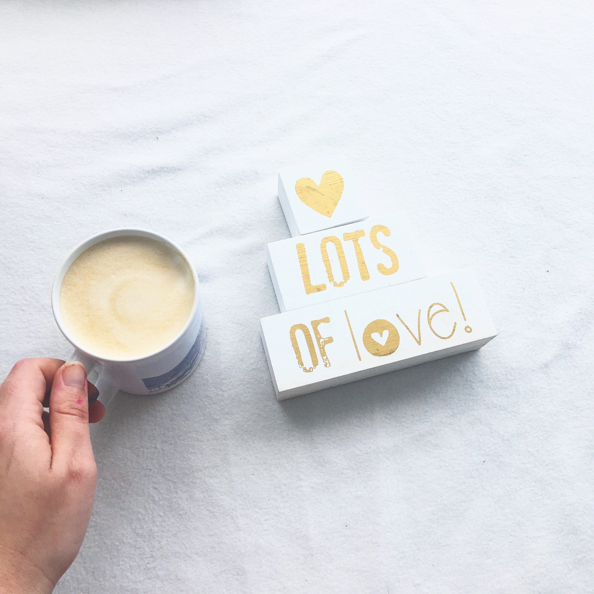

Nosotros
El amor es el motor que nos mueve en cada paso del proceso de elaboración de nuestros productos. De forma artesanal vamos construyendo experiencias, siempre estando en cada uno de los detalles para que cada momento sea único.
Es parte del proceso de elaboración y selección de nuestros productos tomar conciencia y cuidado del medio ambiente. Por eso nuestros desayunos contienen frascos de vidrios, bandejas de madera, todo reutilizable.
Desde el 2021 apostamos a que nuestros desayunos sean repartidores de sonrisas y de unión, generadora de experiencias hermosas y momentos imborrables. Contamos con una amplia variedad de desayunos y picadas, como también contamos con una opción vegana y SinTacc.
